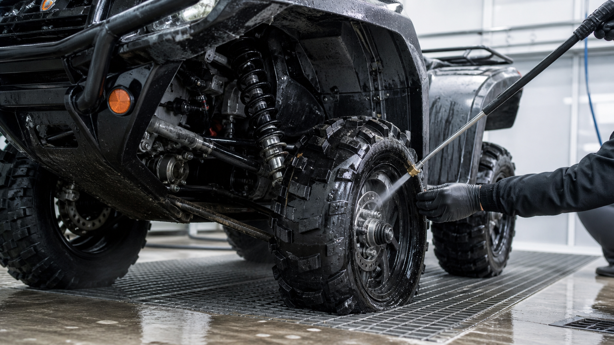

КВАДРОЦИКЛЫ · 10
После брода и грязи: что проверить
Грязь и вода не всегда видны после мойки, но могут оставаться в узлах, которые отвечают за надёжность квадроцикла.

Сразу после поездки
- Тщательно промойте радиатор, подвеску, тормоза и днище без сильной струи в уплотнения.
- Осмотрите пыльники, ступицы и тормозные механизмы.
- Проверьте воздушный фильтр и отсутствие воды в вариаторе.
На следующем выезде
Обратите внимание на скрипы, гул ступиц, изменение тормозного усилия и работу трансмиссии. Ранняя диагностика дешевле восстановления узла.
Жидкости и агрегаты
После глубокого брода оцените состояние масел и смазок по регламенту модели. Эмульсия, вода в вариаторе или фильтре означают, что одной мойки недостаточно.
Наблюдайте на следующем выезде
- Скрипы и гул ступиц.
- Изменение тормозного усилия.
- Рывки вариатора и трансмиссии.
Полезно после проверки
Если квадроцикл заглох в воде, не пытайтесь сразу запускать двигатель. Сначала исключите попадание воды туда, где она может вызвать серьёзные повреждения, и проведите осмотр.